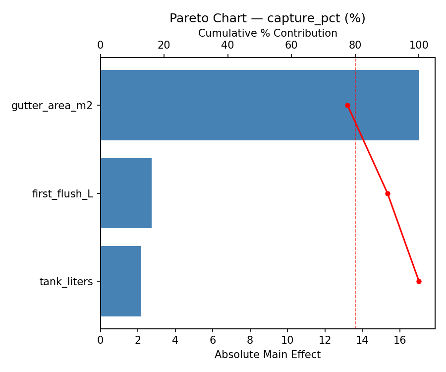
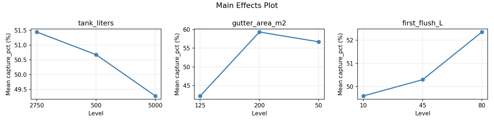
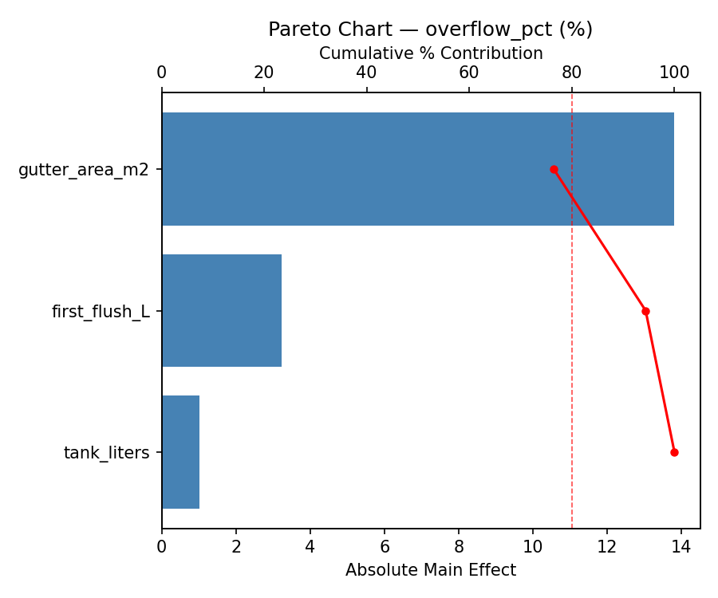
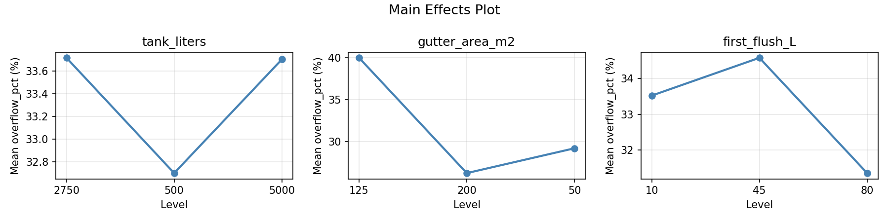
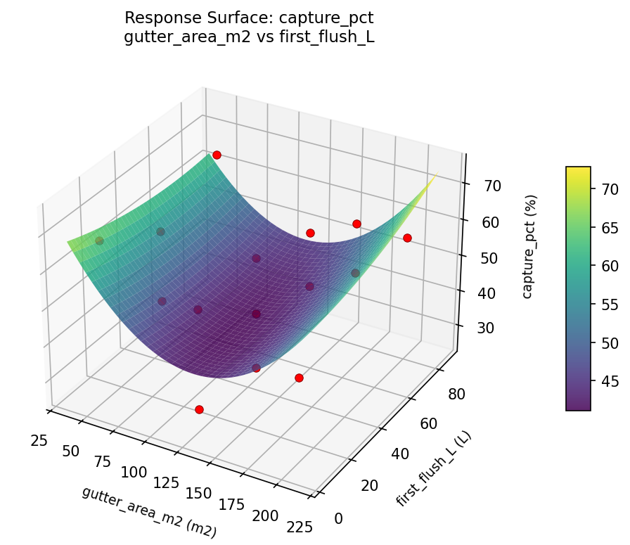
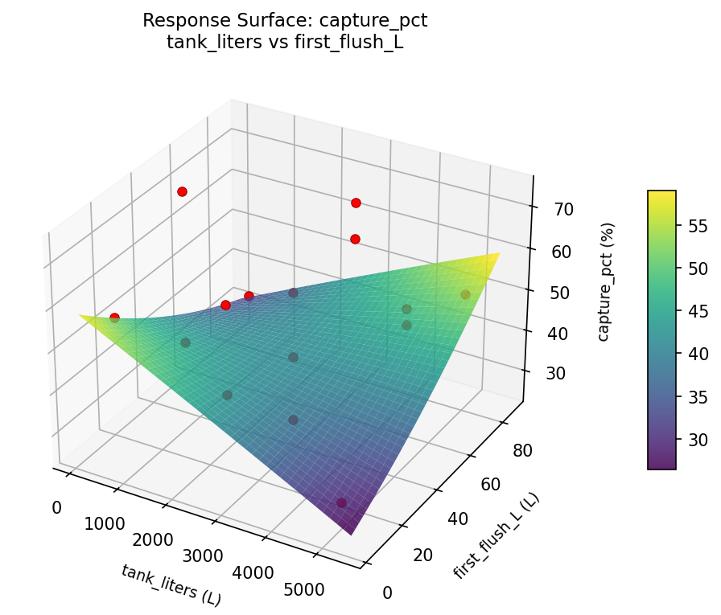
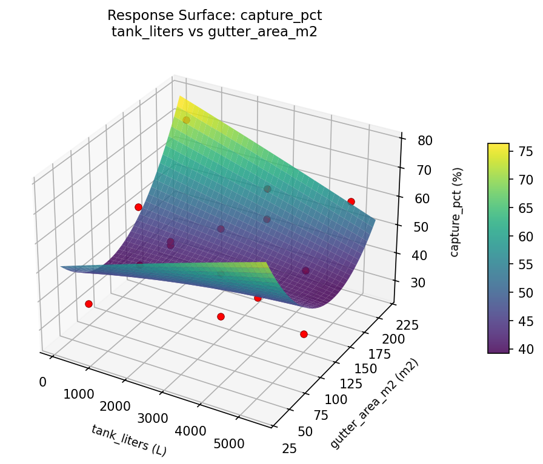
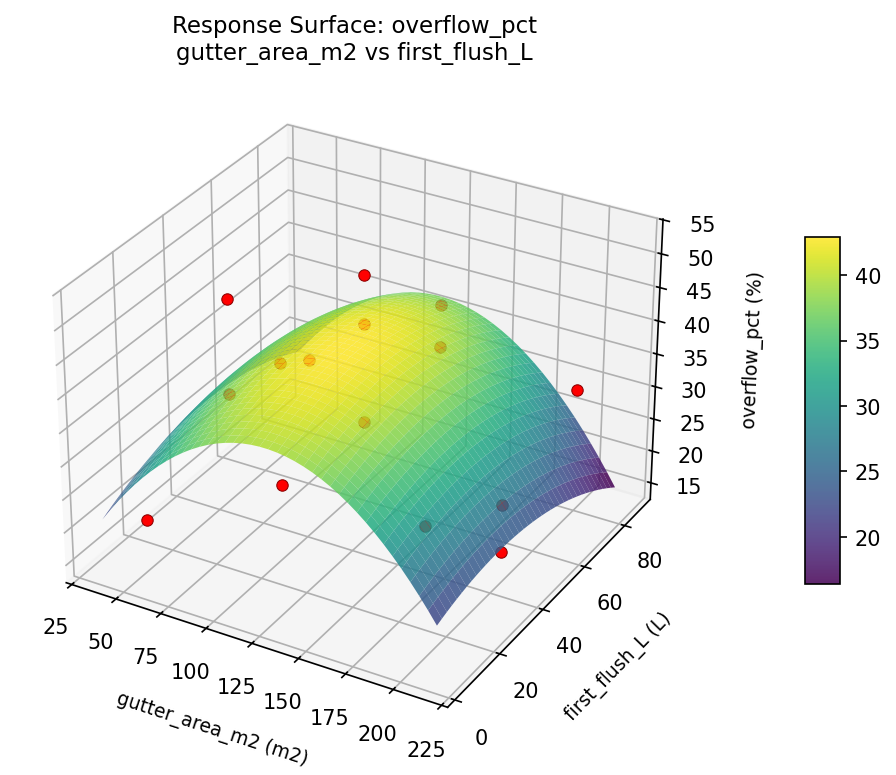
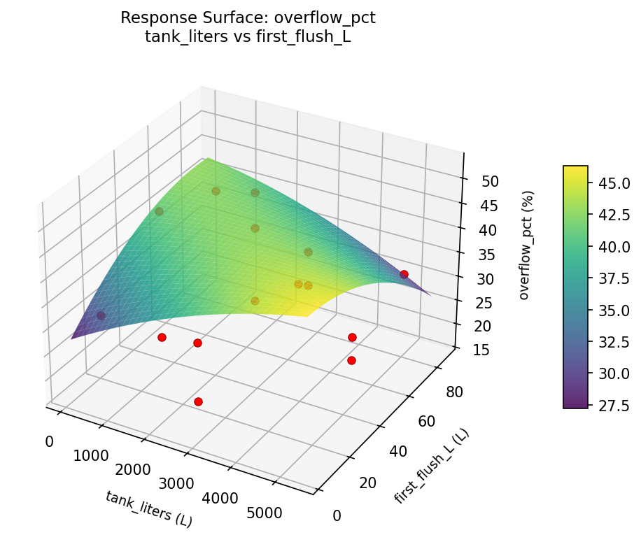
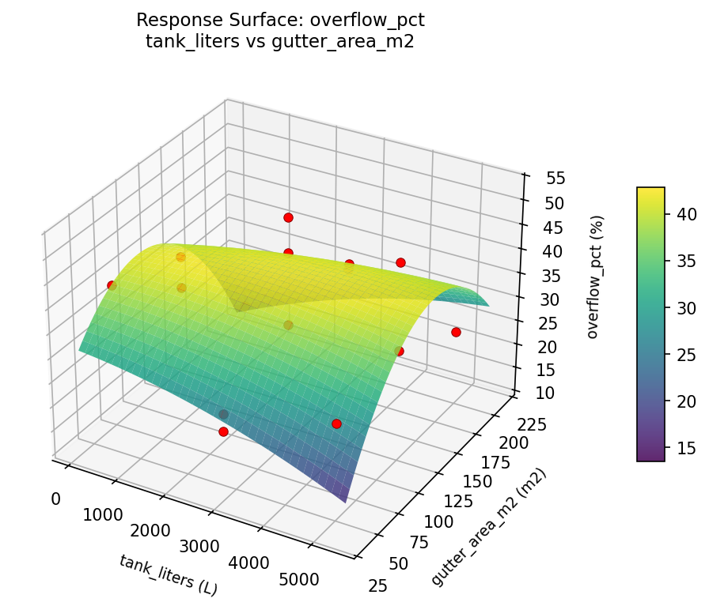

Summary
This experiment investigates rainwater harvesting system. Box-Behnken design to maximize water captured and minimize overflow by tuning tank size, gutter area, and first-flush diverter volume.
The design varies 3 factors: tank liters (L), ranging from 500 to 5000, gutter area m2 (m2), ranging from 50 to 200, and first flush L (L), ranging from 10 to 80. The goal is to optimize 2 responses: capture pct (%) (maximize) and overflow pct (%) (minimize). Fixed conditions held constant across all runs include annual rainfall mm = 900, usage L day = 50.
A Box-Behnken design was chosen because it efficiently fits quadratic models with 3 continuous factors while avoiding extreme corner combinations — requiring only 15 runs instead of the 8 needed for a full factorial at two levels.
Quadratic response surface models were fitted to capture potential curvature and factor interactions. The RSM contour plots below visualize how pairs of factors jointly affect each response.
Key Findings
For capture pct, the most influential factors were gutter area m2 (77.6%), first flush L (12.5%), tank liters (9.9%). The best observed value was 73.6 (at tank liters = 2750, gutter area m2 = 200, first flush L = 10).
For overflow pct, the most influential factors were gutter area m2 (76.5%), first flush L (17.9%), tank liters (5.6%). The best observed value was 17.1 (at tank liters = 2750, gutter area m2 = 200, first flush L = 10).
Recommended Next Steps
- Run confirmation experiments at the predicted optimal settings to validate the model.
- Consider whether any fixed factors should be varied in a future study.
Experimental Setup
Factors
| Factor | Low | High | Unit |
|---|
tank_liters | 500 | 5000 | L |
gutter_area_m2 | 50 | 200 | m2 |
first_flush_L | 10 | 80 | L |
Fixed: annual_rainfall_mm = 900, usage_L_day = 50
Responses
| Response | Direction | Unit |
|---|
capture_pct | ↑ maximize | % |
overflow_pct | ↓ minimize | % |
Configuration
{
"metadata": {
"name": "Rainwater Harvesting System",
"description": "Box-Behnken design to maximize water captured and minimize overflow by tuning tank size, gutter area, and first-flush diverter volume"
},
"factors": [
{
"name": "tank_liters",
"levels": [
"500",
"5000"
],
"type": "continuous",
"unit": "L"
},
{
"name": "gutter_area_m2",
"levels": [
"50",
"200"
],
"type": "continuous",
"unit": "m2"
},
{
"name": "first_flush_L",
"levels": [
"10",
"80"
],
"type": "continuous",
"unit": "L"
}
],
"fixed_factors": {
"annual_rainfall_mm": "900",
"usage_L_day": "50"
},
"responses": [
{
"name": "capture_pct",
"optimize": "maximize",
"unit": "%"
},
{
"name": "overflow_pct",
"optimize": "minimize",
"unit": "%"
}
],
"settings": {
"operation": "box_behnken",
"test_script": "use_cases/128_rainwater_harvesting/sim.sh"
}
}
Experimental Matrix
The Box-Behnken Design produces 15 runs. Each row is one experiment with specific factor settings.
| Run | tank_liters | gutter_area_m2 | first_flush_L |
|---|
| 1 | 2750 | 50 | 10 |
| 2 | 2750 | 125 | 45 |
| 3 | 5000 | 125 | 80 |
| 4 | 5000 | 125 | 10 |
| 5 | 2750 | 125 | 45 |
| 6 | 2750 | 125 | 45 |
| 7 | 500 | 125 | 80 |
| 8 | 5000 | 50 | 45 |
| 9 | 2750 | 50 | 80 |
| 10 | 5000 | 200 | 45 |
| 11 | 500 | 125 | 10 |
| 12 | 2750 | 200 | 80 |
| 13 | 500 | 50 | 45 |
| 14 | 500 | 200 | 45 |
| 15 | 2750 | 200 | 10 |
Step-by-Step Workflow
1
Preview the design
$ python doe.py info --config use_cases/128_rainwater_harvesting/config.json
2
Generate the runner script
$ python doe.py generate --config use_cases/128_rainwater_harvesting/config.json \
--output use_cases/128_rainwater_harvesting/results/run.sh --seed 42
3
Execute the experiments
$ bash use_cases/128_rainwater_harvesting/results/run.sh
4
Analyze results
$ python doe.py analyze --config use_cases/128_rainwater_harvesting/config.json
5
Get optimization recommendations
$ python doe.py optimize --config use_cases/128_rainwater_harvesting/config.json
6
Generate the HTML report
$ python doe.py report --config use_cases/128_rainwater_harvesting/config.json \
--output use_cases/128_rainwater_harvesting/results/report.html
Real-World Experiment Workflow
ℹ
Physical Home & Environment Test? Use the Manual Workflow
Home and environmental experiments involve real weather conditions, thermal properties, and physical installations that must be measured in situ. The simulation script above is for demonstration. For your real experiments, use record, status, and export-worksheet.
$ python doe.py export-worksheet --config use_cases/128_rainwater_harvesting/config.json \
--format csv --output worksheet.csv
$ python doe.py status --config use_cases/128_rainwater_harvesting/config.json
$ python doe.py record --config use_cases/128_rainwater_harvesting/config.json --run 1
$ python doe.py analyze --config use_cases/128_rainwater_harvesting/config.json --partial
$ python doe.py analyze --config use_cases/128_rainwater_harvesting/config.json
$ python doe.py optimize --config use_cases/128_rainwater_harvesting/config.json
$ python doe.py report --config use_cases/128_rainwater_harvesting/config.json \
--output report.html
✔
Works Without a Test Script
The analysis pipeline doesn't care how results were produced. Record your measurements with record, and the full analysis, optimization, and reporting pipeline works identically. Use --partial to get early insights before all runs are complete.
Features Exercised
| Feature | Value |
|---|
| Design type | box_behnken |
| Factor types | continuous (all 3) |
| Arg style | double-dash |
| Responses | 2 (capture_pct ↑, overflow_pct ↓) |
| Total runs | 15 |
Analysis Results
Generated from actual experiment runs using the DOE Helper Tool.
Response: capture_pct
Top factors: gutter_area_m2 (77.6%), first_flush_L (12.5%), tank_liters (9.9%).
Pareto Chart

Main Effects Plot

Response: overflow_pct
Top factors: gutter_area_m2 (76.5%), first_flush_L (17.9%), tank_liters (5.6%).
Pareto Chart

Main Effects Plot

Response Surface Plots
3D surfaces fitted with quadratic RSM. Red dots are observed data points.
capture pct gutter area m2 vs first flush L

capture pct tank liters vs first flush L

capture pct tank liters vs gutter area m2

overflow pct gutter area m2 vs first flush L

overflow pct tank liters vs first flush L

overflow pct tank liters vs gutter area m2

Full Analysis Output
RSM surface: rsm_capture_pct_tank_liters_vs_gutter_area_m2.png
RSM surface: rsm_capture_pct_tank_liters_vs_first_flush_L.png
RSM surface: rsm_capture_pct_gutter_area_m2_vs_first_flush_L.png
RSM surface: rsm_overflow_pct_tank_liters_vs_gutter_area_m2.png
RSM surface: rsm_overflow_pct_tank_liters_vs_first_flush_L.png
RSM surface: rsm_overflow_pct_gutter_area_m2_vs_first_flush_L.png
=== Main Effects: capture_pct ===
Factor Effect Std Error % Contribution
--------------------------------------------------------------
gutter_area_m2 17.0286 3.7049 77.6%
first_flush_L 2.7500 3.7049 12.5%
tank_liters 2.1679 3.7049 9.9%
=== Summary Statistics: capture_pct ===
tank_liters:
Level N Mean Std Min Max
------------------------------------------------------------
2750 7 51.4429 14.6958 25.9000 67.1000
500 4 50.6750 17.9802 35.6000 73.6000
5000 4 49.2750 14.1989 28.8000 60.5000
gutter_area_m2:
Level N Mean Std Min Max
------------------------------------------------------------
125 7 42.2714 12.8112 25.9000 56.9000
200 4 59.3000 11.3352 46.1000 73.6000
50 4 56.7000 13.8461 37.1000 67.1000
first_flush_L:
Level N Mean Std Min Max
------------------------------------------------------------
10 4 49.6000 16.3032 28.8000 67.1000
45 7 50.3000 16.2447 25.9000 73.6000
80 4 52.3500 12.7136 35.6000 65.8000
=== Main Effects: overflow_pct ===
Factor Effect Std Error % Contribution
--------------------------------------------------------------
gutter_area_m2 13.8143 2.7051 76.5%
first_flush_L 3.2357 2.7051 17.9%
tank_liters 1.0143 2.7051 5.6%
=== Summary Statistics: overflow_pct ===
tank_liters:
Level N Mean Std Min Max
------------------------------------------------------------
2750 7 33.7143 11.3742 20.3000 52.4000
500 4 32.7000 11.4161 17.1000 43.4000
5000 4 33.7000 11.0529 24.3000 49.6000
gutter_area_m2:
Level N Mean Std Min Max
------------------------------------------------------------
125 7 40.0143 9.0935 30.6000 52.4000
200 4 26.2000 7.0152 17.1000 32.3000
50 4 29.1750 10.1313 20.3000 43.4000
first_flush_L:
Level N Mean Std Min Max
------------------------------------------------------------
10 4 33.5250 12.0754 20.3000 49.6000
45 7 34.5857 12.7048 17.1000 52.4000
80 4 31.3500 5.8904 24.0000 38.4000
Pareto chart (capture_pct): use_cases/128_rainwater_harvesting/results/analysis/pareto_capture_pct.png
Pareto chart (overflow_pct): use_cases/128_rainwater_harvesting/results/analysis/pareto_overflow_pct.png
Main effects (capture_pct): use_cases/128_rainwater_harvesting/results/analysis/main_effects_capture_pct.png
Main effects (overflow_pct): use_cases/128_rainwater_harvesting/results/analysis/main_effects_overflow_pct.png
Optimization Recommendations
=== Optimization: capture_pct ===
Direction: maximize
Best observed run: #10
tank_liters = 2750
gutter_area_m2 = 200
first_flush_L = 10
Value: 73.6
RSM Model (linear, R² = 0.2445, Adj R² = 0.0385):
Coefficients:
intercept +50.6600
tank_liters -7.1125
gutter_area_m2 -0.0875
first_flush_L -6.1250
RSM Model (quadratic, R² = 0.9060, Adj R² = 0.7368):
Coefficients:
intercept +56.5333
tank_liters -7.1125
gutter_area_m2 -0.0875
first_flush_L -6.1250
tank_liters*gutter_area_m2 +2.5250
tank_liters*first_flush_L -8.7000
gutter_area_m2*first_flush_L -18.7500
tank_liters^2 -5.4292
gutter_area_m2^2 -4.5292
first_flush_L^2 -1.0542
Curvature analysis:
tank_liters coef=-5.4292 concave (has a maximum)
gutter_area_m2 coef=-4.5292 concave (has a maximum)
first_flush_L coef=-1.0542 concave (has a maximum)
Notable interactions:
gutter_area_m2*first_flush_L coef=-18.7500 (antagonistic)
tank_liters*first_flush_L coef=-8.7000 (antagonistic)
tank_liters*gutter_area_m2 coef=+2.5250 (synergistic)
Predicted optimum (from quadratic model):
tank_liters = 2750
gutter_area_m2 = 200
first_flush_L = 10
Predicted value: 75.7375
Model quality: Excellent fit — surface predictions are reliable.
Factor importance:
1. tank_liters (effect: 14.2, contribution: 46.4%)
2. first_flush_L (effect: 12.2, contribution: 40.0%)
3. gutter_area_m2 (effect: 4.2, contribution: 13.6%)
=== Optimization: overflow_pct ===
Direction: minimize
Best observed run: #10
tank_liters = 2750
gutter_area_m2 = 200
first_flush_L = 10
Value: 17.1
RSM Model (linear, R² = 0.3433, Adj R² = 0.1643):
Coefficients:
intercept +33.4400
tank_liters +5.3500
gutter_area_m2 +0.9375
first_flush_L +6.0375
RSM Model (quadratic, R² = 0.9200, Adj R² = 0.7761):
Coefficients:
intercept +28.1667
tank_liters +5.3500
gutter_area_m2 +0.9375
first_flush_L +6.0375
tank_liters*gutter_area_m2 +0.1500
tank_liters*first_flush_L +6.5000
gutter_area_m2*first_flush_L +11.7250
tank_liters^2 +5.7792
gutter_area_m2^2 +3.8542
first_flush_L^2 +0.2542
Curvature analysis:
tank_liters coef=+5.7792 convex (has a minimum)
gutter_area_m2 coef=+3.8542 convex (has a minimum)
first_flush_L coef=+0.2542 convex (has a minimum)
Notable interactions:
gutter_area_m2*first_flush_L coef=+11.7250 (synergistic)
tank_liters*first_flush_L coef=+6.5000 (synergistic)
Predicted optimum (from quadratic model):
tank_liters = 5000
gutter_area_m2 = 125
first_flush_L = 80
Predicted value: 52.0875
Model quality: Excellent fit — surface predictions are reliable.
Factor importance:
1. first_flush_L (effect: 12.1, contribution: 44.3%)
2. tank_liters (effect: 10.8, contribution: 39.7%)
3. gutter_area_m2 (effect: 4.4, contribution: 16.0%)